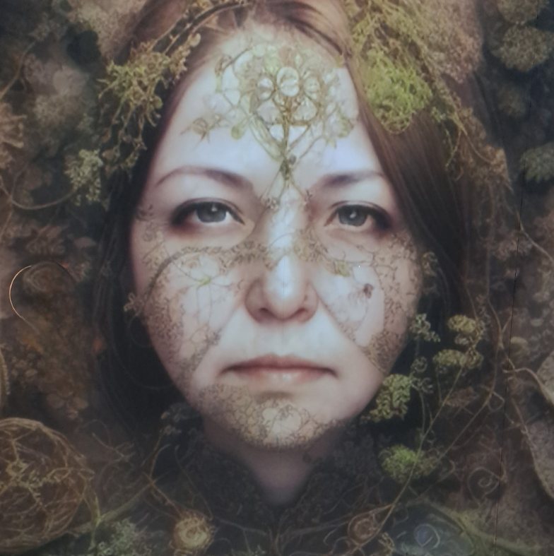

Főhős
Rövid bemutatás a főszereplőről. Mit szeretne? Mitől fél? Mi az, amit a történet során kénytelen lesz újragondolni?

Regények, novellák, gondolatok
Regény
Egy történet hatalomról, veszteségről, döntésekről és arról, hogy mit jelent megtalálni a helyünket egy olyan világban, amely már eldöntötte, kik vagyunk.
Ide kerül majd a regény rövid bemutatása. Néhány bekezdésben elmesélheted, milyen világban játszódik a történet, kik a fontosabb szereplők, és mi az a kérdés vagy konfliktus, ami elindítja őket az úton.
Nem szükséges mindent elárulnod. Sőt, ezen az oldalon inkább azt érdemes megmutatni az olvasónak, ami felkelti a kíváncsiságát.
Itt mesélhetsz egy kicsit a regény világáról. Milyen helyeken járunk? Milyen szabályok szerint működik ez a világ? Mi az, ami ismerős benne, és mi az, ami teljesen idegen?
Rövid bemutatás a főszereplőről. Mit szeretne? Mitől fél? Mi az, amit a történet során kénytelen lesz újragondolni?
Ide kerülhet egy másik fontos szereplő rövid bemutatása.
És természetesen ide kerülhetnek még további szereplők is.
Hírek a regényről
2026
A regény jelenleg szerkesztés alatt áll. Ezen az oldalon később itt osztom majd meg a megjelenéssel, a borítóval és más fontosabb mérföldkövekkel kapcsolatos híreket.
A regényhez kapcsolódó gondolatokat, kulisszatitkokat és részleteket később az írói naplóban is megtalálhatod.
Irány az írói napló